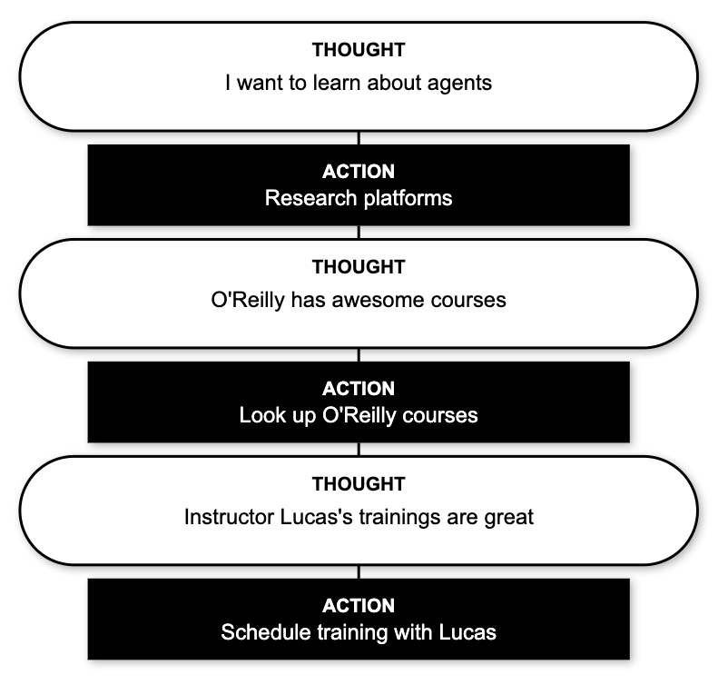
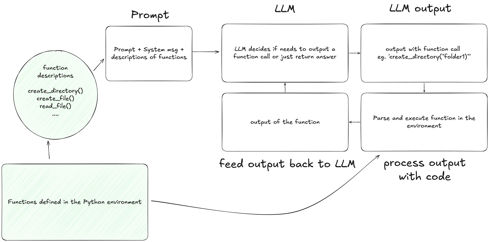
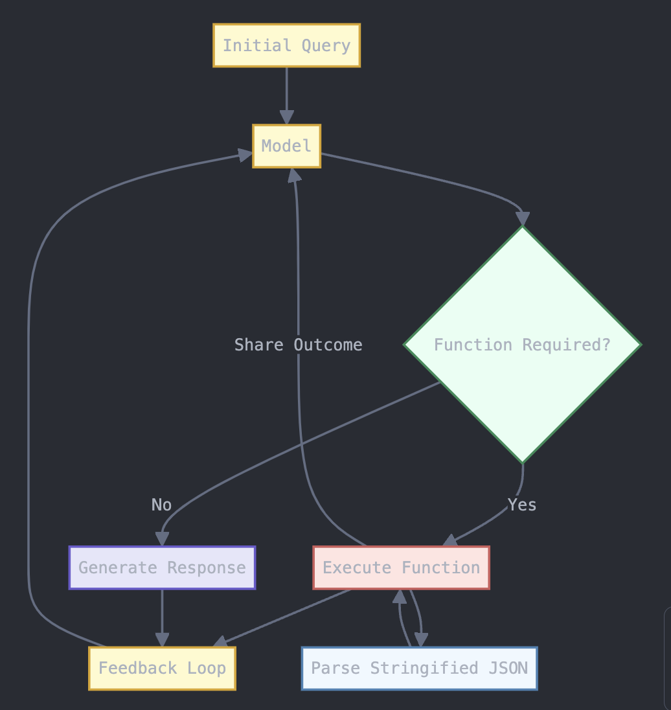

class: center, middle # Getting Started with Agents Using LangChain ## By Lucas Soares ### 07/18/2024 --- <div class="slide"> <h1>Lucas Soares</h1> <div style="display: flex; align-items: center;"> <ul style="flex: 1;"> <li>AI Engineer</li> <br> <br> <br> <br> </ul> <img src="../notebooks/assets-resources/profile_pic.png" width="300" style="margin-left: 20px;"> </div> </div> --- <div class="slide"> <h1>Lucas Soares</h1> <div style="display: flex; align-items: center;"> <ul style="flex: 1;"> <li>AI Engineer</li> <br> <li>Instructor at O'Reilly Media</li> <br> <br> </ul> <img src="../notebooks/assets-resources/profile_pic.png" width="300" style="margin-left: 20px;"> </div> </div> --- <div class="slide"> <h1>Lucas Soares</h1> <div style="display: flex; align-items: center;"> <ul style="flex: 1;"> <li>AI Engineer</li> <br> <li>Instructor at O'Reilly Media</li> <br> <li>Curious about all things intelligence</li> </ul> <img src="../notebooks/assets-resources/profile_pic.png" width="300" style="margin-left: 20px;"> </div> </div> --- # Table of Contents __1. Agents as Thought + Action__ -- __2. Defining Agents__ -- __3. Agents in 3 Levels of Complexity__ -- __4. OpenAI's Function API__ -- __5. LangChain Framework__ -- __6. Building Agents with LangChain__ -- __7. LangGraph -- __8. Concluding Remarks__ -- __9. References__ --- # Thought + Action -- - How do we do stuff? We __think__ and we __act__ -- - Example: Decision-making process for attending a live-training --  --- class: center, middle # Thinking: ## What to do + planning (order, priority..) --- class: center, middle # Acting: ## used __tools: search, browser, etc...__ --- # What is an Agent? (LLM + Tool) <div style="display: flex; justify-content: space-around; margin-top: 2em;"> <div style="text-align: center; width: 45%;"> <h3 style="color: #0a0b0b;">LLM</h3> <p>Predicts next word/sentence</p> <img src="../notebooks/assets-resources/llm_predicts_pancakes.png" alt="LLM predicts pancakes" style="width: 100%; max-width: 300px; height: auto; margin-top: 1em;"> </div> <div style="text-align: center; width: 45%;"> <h3 style="color: #0a0b0b;">Tool</h3> <p>Performs actions in the real-world</p> <img src="../notebooks/assets-resources/pancake_maker.png" alt="Pancake maker" style="width: 100%; max-width: 300px; height: auto; margin-top: 1em;"> </div> </div> --- # LLMs can use tools! - [Toolformer](https://arxiv.org/pdf/2302.04761.pdf) -- <img style="width: 400px; margin-left:-5px "src="../notebooks/assets-resources/toolformer.png"> <p style="font-size: 14px; margin-top: -10px;"> <sup>[1]</sup> <a href="https://arxiv.org/pdf/2302.04761.pdf">(Schick u. a., o. J., 2023)</a> </p> --- # Interleaving Thoughts and Actions - [ReACT](https://arxiv.org/pdf/2210.03629.pdf): LLMs for __RE__asoning & __ACT__ion. <img style="width: 800px" src="../notebooks/assets-resources/react_paper_figure.png" > <p style="font-size: 14px; margin-top: -10px;"> <sup>[2]</sup> <a href="https://arxiv.org/pdf/2210.03629.pdf">Yao, X., et al. (2023)</a> </p> --- ## Agents Are Getting Popular -- - [A Survey on Large Language Model based Autonomous Agents](https://arxiv.org/pdf/2308.11432.pdf) <img style="width: 800px" src="../notebooks/assets-resources/agents_growth_trends.png"> <p style="font-size: 14px; margin-top: 10px;"> <sup>[3]</sup> <a href="https://arxiv.org/pdf/2308.11432.pdf" >(Wang et al. 2024)</a> --- # Popular Agent Implementations -- - [BabyAGI](https://github.com/yoheinakajima/babyagi): separate planning and execution steps <img style="width: 600px" src="../notebooks/assets-resources/baby-agi.png" alt=""> <p style="font-size: 14px; margin-top: -10px;"> <sup>[4]</sup> <a href="https://github.com/yoheinakajima/babyagi" >BabyAGI</a> --- # Popular Agent Implementations - [AutoGPT](https://github.com/Significant-Gravitas/AutoGPT): created for long-running, open-ended goals <img style="width: 800px" src="../notebooks/assets-resources/autogpt.png" alt=""> <p style="font-size: 14px; margin-top: 10px;"> <sup>[5]</sup> <a href="https://github.com/Significant-Gravitas/AutoGPT" >AutoGPT</a> --- # Popular Agent Implementations - [GPT-Researcher](https://github.com/assafelovic/gpt-researcher?ref=blog.langchain.dev): produce detailed, factual and unbiased research reports <img style="width: 300px" src="../notebooks/assets-resources/gpt-researcher.png" alt=""> <p style="font-size: 14px; margin-top: 10px;"> <sup>[6]</sup> <a href="https://github.com/assafelovic/gpt-researcher?ref=blog.langchain.dev">GPT-Researcher</a> --- # Popular Agent Implementations - [Custom GPTs](https://openai.com/blog/introducing-gpts) for specific tasks <img style="width: 500px" src="../notebooks/assets-resources/custom-gpts.png" alt=""> <p style="font-size: 14px; margin-top: 10px;"> <sup>[7]</sup> <a href="https://openai.com/blog/introducing-gpts">Custom GPT OpenAI Blog Post</a> --- class: center, middle # Agents in 3 Levels of Complexity --- # Level 1: LLM + functions inside the prompt -- - Inspired by ['Toolformer'](https://arxiv.org/pdf/2302.04761.pdf) <img style="width: 400px "src="../notebooks/assets-resources/toolformer.png"> <p style="font-size: 14px; margin-top: 10px;"> <sup>[1]</sup> <a href="https://arxiv.org/pdf/2302.04761.pdf">(Schick u. a., o. J., 2023)</a> --- # Level 1: LLM + functions inside the prompt <div style="display: flex; justify-content: center;">  </div> --- # Limitations -- - __Probabilistic outputs__ make function calls unreliable -- - Need for __structured ways to prepare the inputs__ of the function calls -- - Putting entire functions inside text prompts is clunky and __non-scalable__ -- - Solution? __OpenAI Functions__! --- class: center, middle # Level 2: OpenAI Function Calling --- # Level 2: OpenAI Function Calling -- <div style="display: flex; justify-content: center;">  </div> -- <p style="font-size: 14px; margin-top: 10px;"> <sup>[8]</sup><a href="https://platform.openai.com/docs/guides/function-calling">OpenAI Function Calling Docs</a> </p> ??? - __Takeaway__: This streamlined interaction sets the stage for the more advanced capabilities provided by the AutoGen framework, focusing on creating efficient, self-improving agents that can communicate with each other. --- class: center, middle # Level 3: Autonomous Agents --- # Level 3: Autonomous Agents -- <img style="width: 700px" src="../notebooks/assets-resources/agent_loop.png"> - [The Agent Loop](https://blog.langchain.dev/openais-bet-on-a-cognitive-architecture/#:~:text=sweep.dev%20is%20another%20great%20example.%20they%20wrote%20a%20blog%20over%20the%20summer%20describing%20their%20cognitive%20architecture%2C%20including%20a%20fantastic%20diagram.) <p style="font-size: 14px; margin-top: 20px; margin-left: 400px;"> <a href="https://blog.langchain.dev/openais-bet-on-a-cognitive-architecture/#:~:text=sweep.dev%20is%20another%20great%20example.%20they%20wrote%20a%20blog%20over%20the%20summer%20describing%20their%20cognitive%20architecture%2C%20including%20a%20fantastic%20diagram.">OpenAI's Bet on a Cognitive Architecture</a> </p> --- class: center, middle # Q&A --- class: center, middle # Break 10 Minutes --- class: center, middle # The Agent Loop --- # How Can We Effectively Perform Tasks with Agents? -- <img style="width: 700px" src="../notebooks/assets-resources/agent_loop.png"> - [The Agent Loop](https://blog.langchain.dev/openais-bet-on-a-cognitive-architecture/#:~:text=sweep.dev%20is%20another%20great%20example.%20they%20wrote%20a%20blog%20over%20the%20summer%20describing%20their%20cognitive%20architecture%2C%20including%20a%20fantastic%20diagram.) <p style="font-size: 14px; margin-top: 20px; margin-left: 400px;"> <a href="https://blog.langchain.dev/openais-bet-on-a-cognitive-architecture/#:~:text=sweep.dev%20is%20another%20great%20example.%20they%20wrote%20a%20blog%20over%20the%20summer%20describing%20their%20cognitive%20architecture%2C%20including%20a%20fantastic%20diagram.">OpenAI's Bet on a Cognitive Architecture</a> </p> --- # Good Agents are Routers -- - Good examples of 'useful' agents (that implement a more like routing type of architecture than actual agent architecture) -- - LangChain is a framework to implement these types of routing procedures! - ['OpenAI's Bet on a Cognitive Architecture'](https://blog.langchain.dev/openais-bet-on-a-cognitive-architecture/) --- # What is LangChain? -- - [LangChain](https://python.langchain.com/docs/get_started/introduction) is a framework for building context-aware reasoning applications -- - Its main features -- - __Components__: composable tools and integrations for working with language models. -- - __Off-the-shelf chains__: built-in assemblages of components for accomplishing higher-level tasks <p style="font-size: 14px; margin-top: 250px;"> <sup>[10]</sup> <a href="https://python.langchain.com/docs/get_started/introduction" >LangChain Docs</a> --- # Core Elements of LangChain -- ## __Models__ -- - Abstractions over LLM APIs (e.g ChatGPT API) -- ```python from langchain_openai.chat_models import ChatOpenAI chat_model = ChatOpenAI(api_key=os.getenv("OPENAI_API_KEY"), model="gpt-3.5-turbo-1106") chat_model.invoke("hi!") ``` --- # Core Elements of LangChain ## __Prompt Templates__ -- - Abstractions over traditional text prompts for LLMs -- ```python from langchain.prompts import ChatPromptTemplate prompt = ChatPromptTemplate.from_template("Show me 5 examples of this concept: {concept}") prompt.format(concept="animal") # Output # 'Human: Show me 5 examples of this concept: animal' ``` --- # Core Elements of LangChain ## __Output parser__ -- - Abstractions for parsing outputs of LLMs -- ```python from langchain.schema import BaseOutputParser class CommaSeparatedListOutputParser(BaseOutputParser): """Parse the output of an LLM call to a comma-separated list.""" def parse(self, text: str): """Parse the output of an LLM call.""" return text.strip().split(", ") CommaSeparatedListOutputParser().parse("hi, bye") # Output: ['hi', 'bye'] ``` --- # LCEL - Putting Components Together -- ## LCEL interface - Interface that leverages the __`|`__ pipe symbol to compose LangChain components -- ```python from langchain_openai.chat_models import ChatOpenAI from langchain.prompts import ChatPromptTemplate from langchain.schema.output_parser import StrOutputParser model = ChatOpenAI(temperature=0) prompt = ChatPromptTemplate.from_template(template="Name 5 concepts related to this: {concept}. The output should be in bullet points.") output_parser = StrOutputParser() chain = prompt | model | output_parser chain.invoke({"concept": "probability distribution"}) # Output # - Discrete probability distribution: This concept... # - Continuous probability.... # ... ``` --- class: center, middle # Practicing the Basics of LangChain <h2><span style="background-color: lightgreen"> LangChain Demo </span> </h2> --- class: center, middle # Break --- # Building Agents with LangChain -- ## The Agent Loop -- <img src="../notebooks/assets-resources/agent_loop.svg" width="800"> --- # Key LangChain Components for Agents ## Schema -- - LangChain provides many abstractions for ease of use -- - **AgentAction**: Represents the action an agent should take. -- - **AgentFinish**: Represents the final result to return to the user. -- - **Intermediate Steps**: Previous actions and outputs for the current agent run. -- - **Agent**: Chain responsible for deciding the next step, powered by a language model. --- # Agent Inputs and Outputs ## Agent Inputs -- - Key-value mapping. -- - Required key: `intermediate_steps`. -- ## Agent Outputs -- - Next actions or final response (AgentActions or AgentFinish). -- - Handled by the output parser. --- # AgentExecutor ## The runtime for a LangChain agent ```python next_action = agent.get_action(...) while next_action != AgentFinish: observation = run(next_action) next_action = agent.get_action(..., next_action, observation) return next_action ``` - Handles complexities like tool errors and logging. --- class: center, middle <h2><span style="background-color: lightgreen"> LangChain Agents Demo </span> </h2> --- class: center, middle # Break --- # Tools in LangChain -- - Functions that an agent can call. -- - Consists of: -- - Input schema for the tool. -- - Function to run. -- - Important for building a working agent. --- # Toolkits - Groups of 3-5 tools for specific objectives. -- - Example: GitHub toolkit for interacting with GitHub. -- - LangChain provides a wide set of toolkits. --- class: center, middle # Let's Build Agents! <h2><span style="background-color: lightgreen"> LangChain Agents Demo - Github Agent; Tutor Agent; Research Assistant </span> </h2> --- # References 1. [Toolformer - Schick et al., 2023](https://arxiv.org/pdf/2302.04761.pdf) 2. [ReACT - Yao, X., et al., 2023](https://arxiv.org/pdf/2210.03629.pdf) 3. [A Survey on Large Language Model based Autonomous Agents - Wang et al., 2023](https://arxiv.org/pdf/2308.11432.pdf) 4. [BabyAGI](https://github.com/yoheinakajima/babyagi) 5. [AutoGPT](https://github.com/Significant-Gravitas/AutoGPT) 6. [GPT-Researcher](https://github.com/assafelovic/gpt-researcher?ref=blog.langchain.dev) 7. [Custom GPTs](https://openai.com/blog/introducing-gpts) 8. [OpenAI function calling Docs](https://platform.openai.com/docs/guides/function-calling) 9. [OpenAI's Bet on a Cognitive Architecture](https://blog.langchain.dev/openais-bet-on-a-cognitive-architecture/#:~:text=sweep.dev%20is%20another%20great%20example.%20they%20wrote%20a%20blog%20over%20the%20summer%20describing%20their%20cognitive%20architecture%2C%20including%20a%20fantastic%20diagram.) 10. [LangChain Docs](https://python.langchain.com/docs/get_started/introduction) --- class: center, middle # Conclusion ## Ready to Build Your Own Agents?